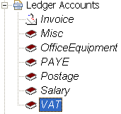
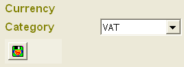

Reports
A number of built in reports are already created for typical monthly,
quarterly, or annually reporting. Some reports have fixed rules which can not
be changed, others have modifiable criteria to allow grouping of relevant
transactions. You should consider using the ad hoc
reporting feature also if it is your intention to simply search for and
group together some specific transactions with common attributes. All the
reports can be customised to your specific criteria, then saved as a custom
report, so next time you do not have to go through the filtering process
again. Activity report This report has three sections to show the
input, output, and break down into categories (or ledgers) of all the
transactions listed in the input/output sections. This report excludes all
inter-account transfers, accounts which are not tax tracked, and transactions
which have no ledger postings. Detailed VAT and VAT Summary reports
These two reports are for Value Added Tax reporting purposes in the UK,
although you can obviously use them for other countries. You will need to
change the tax bands in the preferences section
accordingly. Only entries which result in a posting to the VAT ledger account
are included in these reports. A VAT account is an account whose category is
set to "VAT".
Input/Output report This is a generic report which separates the
transactions into credits and debits. You can specify a number of filters to
return just the transactions of interest. The report can then be saved under a
different name into a custom report so you do not have to go through selecting
the filters again in the next run. Unpaid Invoices Hard coded rule
to return invoices which do not have an associated transaction in the Entry
accounts. Unreconciled Shows all entries which have not been
reconciled. Reconciliation is covered in the
Entry account section. Monthly Cashflow Shows the input, output
and net cashflow for each moth of your financial, so you can make comparison
on relative performances from one month to the next. Performance
This report hopefully gives you an indication on how well your company has
performed so far this financial year, together with any entry in the Entry
accounts which have not resulted in any ledger posting. You can then address
these breaks before sending the report to your accountant. |